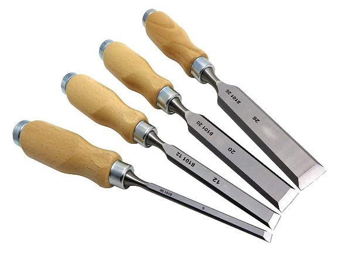
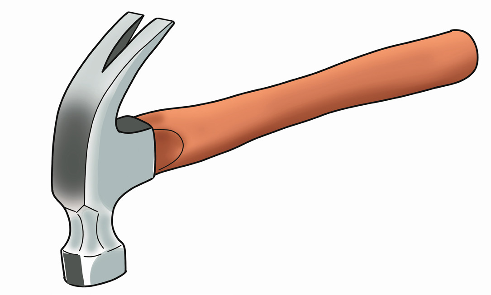

Equipment for sculpting
A sculpture can be created by using a variety of equipment. There are several pieces of equipment used to create sculpture. Some of these include:
Chisel: This is a tool with a sharp cutting edge which is used for carving, shaping and cutting materials. There are various chisels for different materials such as wood, stone and metals. Figure 5.15 shows wood chisels.

Hammer: This is used to drive the chisel when removing large sections of the material. Figure 5.16 shows a hammer.

Mallets: It is a tool for sculpting that is used for driving in a chisel into the material while sculpting a detailed sculpture. Figure 5.17 shows mallets used in sculpture.